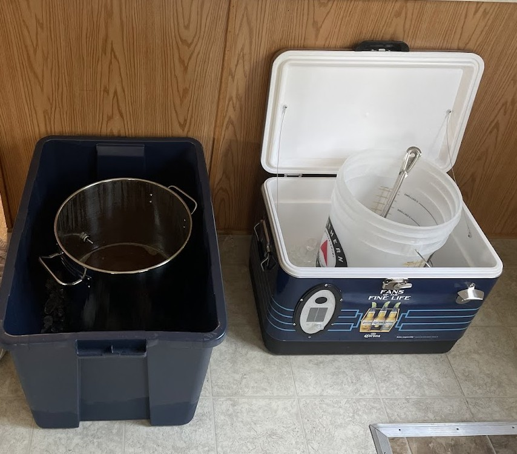
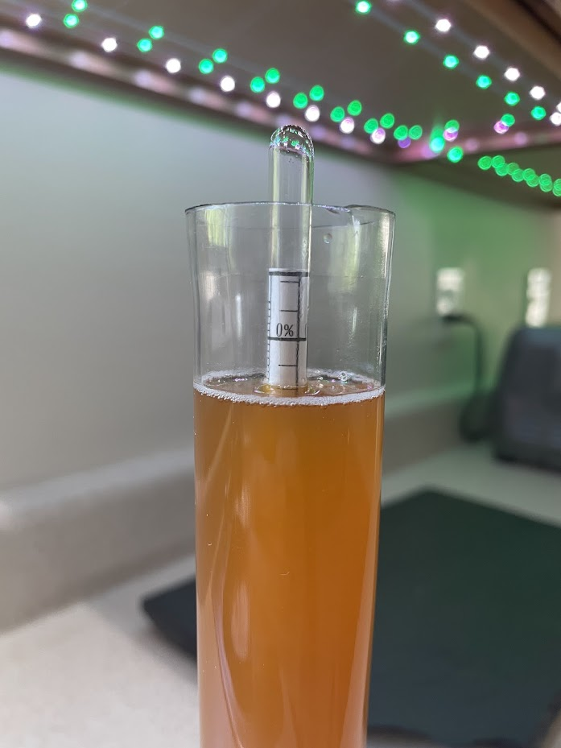
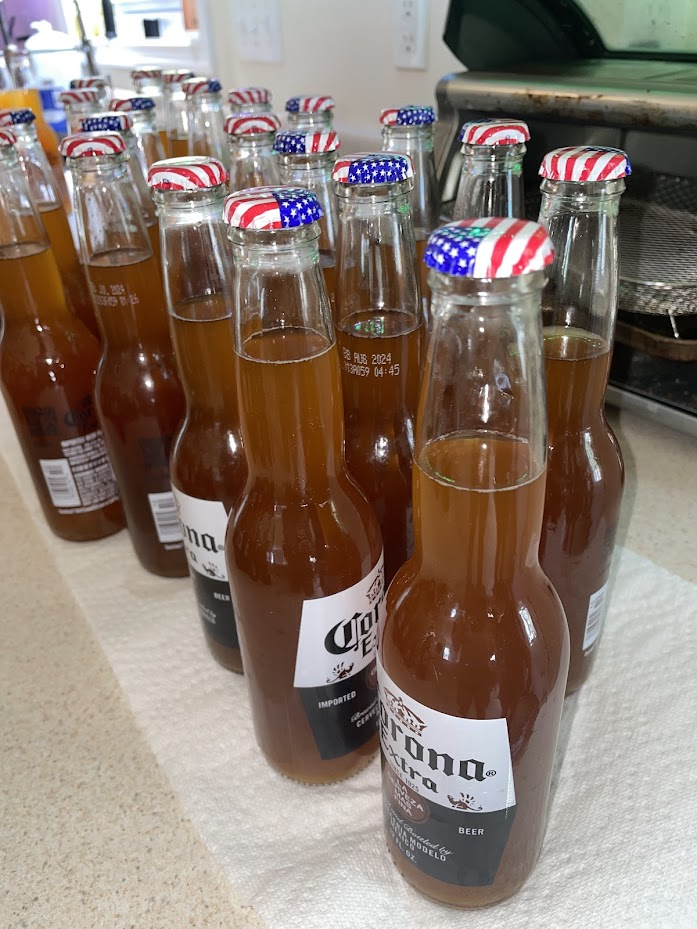

Introduction
This was my first homebrew! I did so much research beforehand (mostly on Reddit LOL), but it was such a fun process. I knew this was gonna be the start of a fantastic hobby, and hopefully lead to me owning my own brewery one day!
I’m just gonna show off the finished product to start this off.
Ingredients
I live in a city, so I like to buy gallon water from the store, since chlorine or other chemicals in the tap water can effect the taste of the beer. I don’t think it matters which water you get, but I always choose spring water.
This was also my first time brewing, so I purchased everything online, only to find out next time I brew there is a brew store 5 minutes from my house! So now I buy all of my ingredients there, but in future posts I’ll still continue to put the prices from this website, they are really great for brew ingredients, as well as brewing kits.
Also, my total was $51.20, which comes out to approximately 52 - 12 oz beer bottles. So, less than a dollar per beer, not too shabby!
Brewing Day
April 12, 2024
- Heat 2.5 gallons of water. Bring to a boil.
- When the water is boiling, remove the kettle from the burner and stir in the 3.15 lbs Pilsen malt syrup.
- Return wort to boil. The mixture is now called “wort”, the brewer’s term for unfermented beer.
- Total boil time for this recipe is 60 minutes.
- Add 1 oz Crystal hops at the beginning of the boil.
- Add the remaining 3 lbs Wheat DME with 15 minutes remaining in the boil.
- When the 60-minute boil is finished, cool the wort to approximately 100° F as rapidly as possible. I put the kettle in a large tub filled with ice, you can also put the kettle in an ice bath in your kitchen sink.
- While the wort cools, sanitize the fermenting equipment – fermenter, lid or stopper, airlock, funnel, etc – along with the yeast packet.
- Fill the primary fermenter with 2 gallons of cold water (I had my primary fermenter sitting in a cooler with ice, to get the 2 gallons of water cold, while I was waiting for the wort to cool), then pour in the cooled wort. Leave any thick sludge in the bottom of the kettle.
- 
- Add more cold water as needed to bring the volume to 5 gallons.
- Seal the fermenter and rock back and forth to splash for a few minutes to aerate the wort.
- Measure specific gravity of the wort with a hydrometer and record this number. I kept mine in the notes section of my phone, along with the date.
- Add yeast once the temperature of the wort is 75°F or lower (not warm to the touch). Sanitize and open the yeast pack and carefully pour the contents into the primary fermenter.
- Seal the fermenter. Add approximately 1 tablespoon of water to the sanitized fermentation lock. Insert the airlock into rubber stopper or lid and seal the fermenter.
- Move the fermenter to a warm, dark, quiet spot until fermentation begins.
Primary Fermentation
April 12, 2024 - April 26, 2024
- Within approximately 48 hours of Brewing Day, active fermentation will begin. The optimum fermentation temperature for this beer is 65°- 70°F. Move the fermenter to a warmer or cooler spot as needed.
- Approximately one to two weeks after brewing day, active fermentation will end.
- I measured the specific gravity on day 12 (April 24, 2024) and day 14 (April 26, 2024) and it was steady. My beer ended up being approximately 5% ABV. I unfortunately don’t have a picture of the original gravity reading, but below is a picture of the final gravity reading.
- 
- I decided to go ahead and bottle my beers on day 14. I probably should have waited a bit longer, but I was really eager to try the beer 😆.
Bottling Day
April 26, 2024
- Sanitize siphoning and bottling equipment.
- Mix a priming solution; I used Corn sugar (dextrose), 2/3 cup in 16 oz water. Bring this solution to a boil, stir in the 12 grams of Crystallized Lemon and pour into the bottling bucket.
- Siphon beer into bottling bucket and mix with priming solution. Stir gently to mix—don’t splash.
- Fill and cap bottles.
- 
- Condition bottles at room temperature for 1–2 weeks. After this point, the bottles can be stored cool or cold.
First Taste
May 2, 2024
I was a little impatience on waiting the full 1-2 weeks, so I chilled one of the bottles and tried it on day 6 of bottle conditioning (but I let the rest continue conditioning).
The beer was SO good. I was so pleasantly surprised. It was bubbly, cold, and crisp. I was so excited to do another batch.
Labeling
May 8, 2024
Finally, after bottling conditioning was complete, I labeled all the bottles. When I started dating my boyfriend (Liam) back in 2020, I told him I wanted to have my own brewery one day. He doodled up an amazing logo.
Four years later, he recreated it using Adobe Illustrator, and he conveniently works at a print shop and was able to print the labels. My best friend (Patty) named the beer, Hanny’s Shandy. Liam then created a label specifically for the beer. I LOVE IT. One day you’ll see these all over the place (I hope).